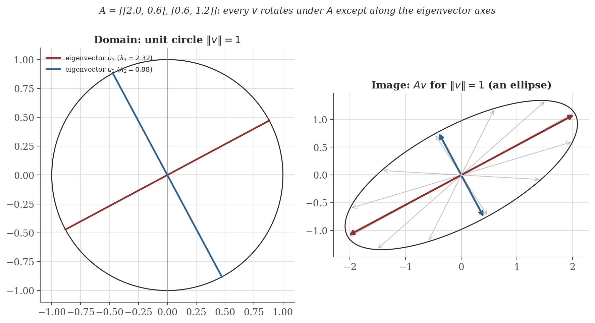
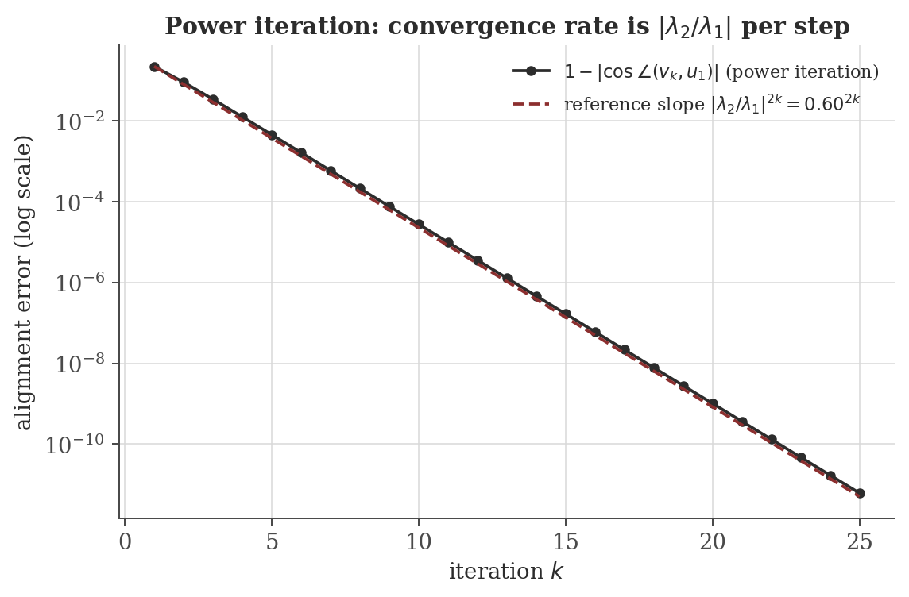
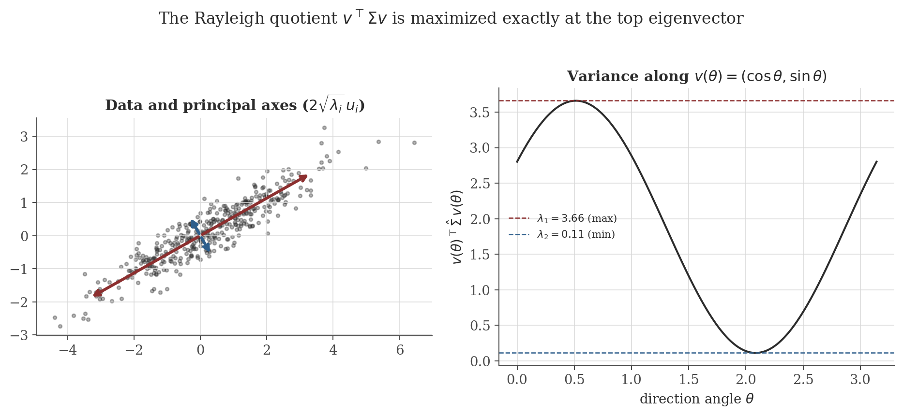

Eigenvalues and Eigenvectors
Disclaimer: These are my personal notes compiled for my own reference and learning. They may contain errors, incomplete information, or personal interpretations. While I strive for accuracy, these notes are not peer-reviewed and should not be considered authoritative sources. Please consult official textbooks, research papers, or other reliable sources for academic or professional purposes.
Contents
- Why invariant directions matter
- Eigenvalues, eigenvectors, eigenspaces
- The characteristic polynomial
- Algebraic vs. geometric multiplicity
- Diagonalization — and a subtlety about which field
- The spectral theorem for symmetric matrices
- The power method
- Application: PCA as a Rayleigh-quotient problem
- Application: linear dynamical systems and companion matrices
- Computation
- Common pitfalls
- Connections
- References
1. Why invariant directions matter
A linear map $A: \mathbb{R}^n \to \mathbb{R}^n$ generally rotates, shears, and rescales vectors all at once, in a way that depends on direction. The question this note answers is: are there directions along which $A$ acts by pure scaling — no rotation, no shearing, just stretching or compressing? Such directions, when they exist, are exactly where the geometry of $A$ becomes one-dimensional and hence trivially easy to reason about: repeated application of $A$, matrix exponentials, stability of dynamical systems, and directions of maximal variance in data all reduce to scalar arithmetic once expressed along these directions. This is the entire reason eigenvalues are worth a dedicated theory rather than being an isolated curiosity of $2\times2$ examples.
2. Eigenvalues, eigenvectors, eigenspaces
For a square matrix $A \in \mathbb{C}^{n\times n}$, a nonzero vector $v \in \mathbb{C}^n$ is an eigenvector of $A$ with eigenvalue $\lambda \in \mathbb{C}$ if
For a fixed $\lambda$, the set $E_\lambda = \{v : Av = \lambda v\} = \ker(A-\lambda I)$ is the eigenspace of $\lambda$ — a genuine linear subspace of $\mathbb{C}^n$ (it is the kernel of the linear map $A-\lambda I$, and kernels of linear maps are always subspaces), containing all eigenvectors for $\lambda$ together with the zero vector.
An eigenvector is defined only up to nonzero scalar multiple: if $v$ is an eigenvector, so is $cv$ for any $c\neq 0$, with the same eigenvalue. "The eigenvector for $\lambda$" is therefore an abuse of language for "a nonzero vector spanning (part of) $E_\lambda$" — see the pitfalls section for why this matters when comparing eigenvectors computed by different methods or software.
3. The characteristic polynomial
$\lambda$ is an eigenvalue of $A$ if and only if $\det(A - \lambda I) = 0$.
The function $p_A(\lambda) = \det(A-\lambda I)$ is a degree-$n$ polynomial in $\lambda$ (the characteristic polynomial), so by the Fundamental Theorem of Algebra it has exactly $n$ roots over $\mathbb{C}$, counted with multiplicity. This is why every $n\times n$ matrix — real or complex — has exactly $n$ eigenvalues over $\mathbb{C}$, even though a real matrix need not have any real eigenvalues at all (Section 5 gives a concrete example). Because $p_A$ has real coefficients when $A$ is real, non-real roots come in conjugate pairs $a\pm bi$.
For $A = \begin{pmatrix}2.0 & 0.6\\ 0.6 & 1.2\end{pmatrix}$:
giving $\lambda = \dfrac{3.2 \pm \sqrt{3.2^2 - 4(2.04)}}{2} = \dfrac{3.2\pm\sqrt{2.08}}{2} \approx 2.321,\ 0.879$. This is the matrix used in the figure below.
For $A\in\mathbb{C}^{n\times n}$ with eigenvalues $\lambda_1,\ldots,\lambda_n$ (with multiplicity), $\ \operatorname{tr}(A) = \sum_i \lambda_i$ and $\det(A) = \prod_i \lambda_i$.
This follows from writing $\det(\lambda I - A) = \prod_i(\lambda-\lambda_i)$ and comparing coefficients: the coefficient of $\lambda^{n-1}$ on the left is $-\operatorname{tr}(A)$ (a standard fact about expanding the determinant of $\lambda I - A$ along its diagonal-dominant structure) and on the right is $-\sum_i\lambda_i$; evaluating at $\lambda=0$ gives $\det(-A) = (-1)^n\det(A) = \prod_i(-\lambda_i) = (-1)^n\prod_i\lambda_i$. Verify against the worked example: $\operatorname{tr}(A) = 2+1.2 = 3.2 = 2.321+0.879$, and $\det(A) = 2.4-0.36=2.04 = 2.321\times0.879$.

4. Algebraic vs. geometric multiplicity
The algebraic multiplicity of eigenvalue $\lambda$ is its multiplicity as a root of $p_A$. The geometric multiplicity is $\dim E_\lambda$, the number of linearly independent eigenvectors it actually admits.
$1 \leq \text{geometric multiplicity} \leq \text{algebraic multiplicity}$ for every eigenvalue.
The lower bound is immediate ($\lambda$ being an eigenvalue means $E_\lambda$ is nontrivial). For the upper bound: extend a basis $v_1,\ldots,v_k$ of $E_\lambda$ ($k=$ geometric multiplicity) to a basis of $\mathbb{C}^n$; in this basis $A$ has block form $\begin{pmatrix}\lambda I_k & B\\ 0 & C\end{pmatrix}$, so $p_A(\mu) = (\lambda-\mu)^k\, p_C(\mu)$, which exhibits $(\lambda-\mu)^k$ as a factor of $p_A$ — i.e. the algebraic multiplicity is at least $k$.
The inequality can be strict, and when it is, $A$ is called defective at that eigenvalue:
$J = \begin{pmatrix}2 & 1\\ 0 & 2\end{pmatrix}$ has characteristic polynomial $(2-\lambda)^2$, so $\lambda=2$ has algebraic multiplicity $2$. But $J - 2I = \begin{pmatrix}0&1\\0&0\end{pmatrix}$ has rank $1$, so $\dim\ker(J-2I) = 1$: the geometric multiplicity is only $1$. There is genuinely only one independent eigenvector direction, $(1,0)^\top$, even though the characteristic polynomial "wants" two.
5. Diagonalization — and a subtlety about which field
$A \in \mathbb{C}^{n\times n}$ is diagonalizable over $\mathbb{C}$ — i.e. $A = PDP^{-1}$ for some invertible $P\in\mathbb{C}^{n\times n}$ and diagonal $D$ — if and only if $\mathbb{C}^n$ has a basis of eigenvectors of $A$, if and only if the geometric multiplicity equals the algebraic multiplicity for every eigenvalue.
If $A$ has $n$ distinct eigenvalues, $A$ is diagonalizable.
If $A\in\mathbb{R}^{n\times n}$ can be written $A=PDP^{-1}$ with $P, D$ both real, then every eigenvalue of $A$ is real.
This is immediate: the diagonal entries of $D$ are eigenvalues of $A$, and $D$ real means they are real. It is worth stating carefully because it is easy to conflate with the much more common (and, as stated, false) claim that "a real matrix needs real eigenvalues to be diagonalizable at all." That claim conflates diagonalizability over $\mathbb{C}$, which needs nothing about realness, with diagonalizability over $\mathbb{R}$ specifically:
The $90°$ rotation $R = \begin{pmatrix}0&-1\\1&0\end{pmatrix}$ has characteristic polynomial $\lambda^2+1$, so its eigenvalues are $\pm i$ — not real. Over $\mathbb{C}$, $R$ has two distinct eigenvalues and is therefore diagonalizable (by the corollary above) with complex $P$ and $D=\operatorname{diag}(i,-i)$. But $R$ has no real eigenvector at all: geometrically, $R$ rotates every nonzero real vector by $90°$, so no real direction is preserved. $R$ is diagonalizable over $\mathbb{C}$ and simultaneously has zero real eigenvectors to diagonalize it over $\mathbb{R}$.
Real eigenvalues are necessary but still not sufficient for diagonalizability over any field — the defective matrix $J$ above has the real eigenvalue $2$ (with multiplicity) and is not diagonalizable over $\mathbb{R}$ or $\mathbb{C}$, because its geometric multiplicity falls short.
6. The spectral theorem for symmetric matrices
One class of matrices sidesteps every subtlety above entirely.
If $A\in\mathbb{R}^{n\times n}$ is symmetric ($A^\top=A$), then $A$ has $n$ real eigenvalues (with multiplicity) and an orthonormal basis of real eigenvectors: $A = Q\Lambda Q^\top$ for some orthogonal $Q$ ($Q^\top Q = I$) and real diagonal $\Lambda$.
Eigenvalues are real. Let $Av=\lambda v$ with $v\in\mathbb{C}^n\setminus\{0\}$ possibly complex, and let $v^*$ denote the conjugate transpose. Since $A$ is real and symmetric, $A^*=A$, so $v^*Av$ is real: $(v^*Av)^* = v^*A^*v^{**}=v^*Av$. Then $\lambda = \dfrac{v^*Av}{v^*v}$ is a ratio of two real numbers ($v^*v=\|v\|^2>0$), hence real.
Eigenvectors for distinct eigenvalues are orthogonal. If $Av_1=\lambda_1v_1$, $Av_2=\lambda_2v_2$, $\lambda_1\neq\lambda_2$: $\lambda_1 v_1^\top v_2 = (Av_1)^\top v_2 = v_1^\top A^\top v_2 = v_1^\top A v_2 = v_1^\top(\lambda_2 v_2) = \lambda_2 v_1^\top v_2$, so $(\lambda_1-\lambda_2)v_1^\top v_2=0$, forcing $v_1^\top v_2=0$.
These two facts handle the case of $n$ distinct eigenvalues completely. When eigenvalues repeat, producing a full orthonormal basis (rather than merely a basis) requires an inductive argument — peel off one real eigenvector, restrict $A$ to its orthogonal complement (which $A$ maps to itself precisely because $A$ is symmetric), and recurse on a smaller symmetric matrix. This step is standard but not repeated here; see Axler (2024, Ch. 7) or Strang (2016, §6.4) for the complete induction. ∎
The practical content: symmetric matrices are always diagonalizable, always over $\mathbb{R}$, and the diagonalizing change of basis can always be taken orthogonal — none of the three failure modes above (complex eigenvalues, defectiveness, non-orthogonality) can occur. This is exactly why covariance matrices (Section 8) and Hessians of smooth functions are so well-behaved: both are symmetric by construction.
7. The power method
Suppose $A$ is diagonalizable with eigenpairs $(\lambda_i, u_i)$ ordered $|\lambda_1| > |\lambda_2| \geq \cdots \geq |\lambda_n|$ (a strict gap at the top). For almost any starting vector $v_0$, the normalized iterates
converge to $\pm u_1/\|u_1\|$, with the alignment error shrinking at rate $O\big(|\lambda_2/\lambda_1|^{k}\big)$.

8. Application: PCA as a Rayleigh-quotient problem
Given mean-centered data with (symmetric, positive semi-definite) sample covariance matrix $\hat\Sigma$, the variance of the data projected onto a unit direction $v$ is exactly the Rayleigh quotient $v^\top\hat\Sigma v$. Principal component analysis asks: which direction maximizes this?
$\max_{\|v\|=1} v^\top\hat\Sigma v = \lambda_1$, the largest eigenvalue of $\hat\Sigma$, attained at $v=u_1$, its corresponding (unit) eigenvector.
So "the direction of maximum variance" and "the top eigenvector of the covariance matrix" are not merely correlated facts about PCA — the second is the closed-form solution to the optimization problem defining the first. This is a special case of the general Courant–Fischer min-max theorem for symmetric matrices (see Horn & Johnson, 2013, §4.2).

9. Application: linear dynamical systems and companion matrices
For the linear recursion $\mathbf{x}_{t} = A\mathbf{x}_{t-1}$, iterating gives $\mathbf{x}_t = A^t\mathbf{x}_0$. If $A$ is diagonalizable with eigenpairs $(\lambda_i,u_i)$ and $\mathbf{x}_0 = \sum_i c_iu_i$, then exactly as in the power-method proof, $\mathbf{x}_t = \sum_i c_i\lambda_i^t u_i$. The long-run behavior is governed entirely by $|\lambda_1|$, the spectral radius: the system contracts to $0$ if $|\lambda_1|<1$, is bounded but non-decaying if $|\lambda_1|=1$, and diverges if $|\lambda_1|>1$.
This is precisely the mechanism behind the AR($p$) causality condition derived in the time series analysis note (Section 5 there), made explicit here. Writing the AR($p$) recursion $X_t = \sum_{i=1}^p\phi_iX_{t-i}+\varepsilon_t$ in companion form with state $\mathbf{v}_t=(X_t,\ldots,X_{t-p+1})^\top$:
Expanding $\det(\lambda I - C)$ along the first row gives $\det(\lambda I-C) = \lambda^p - \phi_1\lambda^{p-1}-\cdots-\phi_p$, and substituting $\lambda = 1/z$ and multiplying through by $z^p$ recovers exactly $z^p\det(1/z\cdot I - C) = 1-\phi_1z-\cdots-\phi_pz^p = \Phi(z)$, the AR characteristic polynomial from the time-series note. So the eigenvalues of the companion matrix $C$ are exactly the reciprocals of the roots of $\Phi$: "roots of $\Phi$ outside the unit circle" (the stated causality condition) is algebraically identical to "eigenvalues of $C$ inside the unit circle" (the spectral-radius stability condition derived in this section) — two descriptions of one fact, one from time-series econometrics and one from linear dynamical systems.
10. Computation
The figures above are generated by eigenvalues/generate_figures.py in this note's directory (runnable via python3 generate_figures.py, requiring numpy and matplotlib). The snippet below verifies, numerically, three of the specific claims made above: the trace/determinant identities, the defective Jordan block's rank deficiency, and the complex eigenvalues of a real rotation matrix.
import numpy as np
A = np.array([[2.0, 0.6], [0.6, 1.2]])
vals, vecs = np.linalg.eigh(A) # symmetric solver: guarantees real, orthonormal output
print("eigenvalues:", vals)
print("trace(A) =", np.trace(A), " sum(eigenvalues) =", vals.sum())
print("det(A) =", np.linalg.det(A), " prod(eigenvalues) =", vals.prod())
J = np.array([[2.0, 1.0], [0.0, 2.0]]) # defective: algebraic mult. 2, geometric mult. 1
print("rank(J - 2I) =", np.linalg.matrix_rank(J - 2 * np.eye(2)), "(expect 1, not 0)")
R = np.array([[0.0, -1.0], [1.0, 0.0]]) # 90-degree rotation: no real eigenvector
print("eigenvalues of R:", np.linalg.eig(R).eigenvalues)
Actual output:
eigenvalues: [0.87888974 2.32111026]
trace(A) = 3.2 sum(eigenvalues) = 3.2
det(A) = 2.04 prod(eigenvalues) = 2.04
rank(J - 2I) = 1 (expect 1, not 0)
eigenvalues of R: [0.+1.j 0.-1.j]
Confirms, respectively: the trace/determinant proposition of Section 3; that $J$ is genuinely defective (rank $1$, not $0$ — a full-rank-deficient $A-\lambda I$ would mean geometric multiplicity $2$, matching the algebraic multiplicity, which is not the case here); and the rotation matrix's non-real spectrum from Section 5.
11. Common pitfalls
False as a blanket statement (Section 5). Diagonalizability over $\mathbb{C}$ requires nothing about realness — any matrix with $n$ distinct eigenvalues qualifies, real or not. Real eigenvalues are necessary only for diagonalizability by a real change of basis specifically, which is what "diagonalizable" silently means in most applied contexts (e.g. PCA, dynamical systems with real state), but is a different, stronger claim from diagonalizability in general.
A repeated root of the characteristic polynomial does not guarantee a matching number of independent eigenvectors (Section 4's Jordan block). Defective matrices are not diagonalizable at all — not over $\mathbb R$, not over $\mathbb C$ — and require the Jordan normal form instead, which is not derived in this note; see Strang (2016, §6.6) or Horn & Johnson (2013, Ch. 3).
Every matrix with $n$ distinct eigenvalues is diagonalizable, but the change-of-basis matrix $P$ is orthogonal ($P^{-1}=P^\top$) only when $A$ is symmetric (more generally, normal: $AA^\top=A^\top A$). For a generic diagonalizable non-symmetric matrix, $P$'s columns are linearly independent eigenvectors but need not be orthogonal, or even unit length.
Eigenvectors are only determined up to a nonzero scalar (Section 2); different libraries or algorithms may return eigenvectors scaled or sign-flipped relative to each other for the exact same matrix, which is not a numerical error. Only the one-dimensional eigenspace (or higher-dimensional, for repeated eigenvalues) is well-defined, not a single canonical vector within it.
12. Connections
- Time series analysis. The AR($p$) causality condition is, by the derivation in Section 9, literally the same spectral-radius stability condition as this note's dynamical-systems section, applied to the AR process's companion matrix.
- Vector spaces. Eigenspaces are subspaces; the diagonalization theorem is a direct-sum decomposition of $\mathbb{C}^n$ into eigenspaces exactly when their dimensions add up to $n$.
- Multivariable calculus. The second-derivative test for a critical point of $f(x,y)$ (that note's Section 7.1) classifies the point by the sign of $D = f_{xx}f_{yy}-f_{xy}^2 = \det(\text{Hessian})$ — exactly the sign of the product of the (necessarily real, by the spectral theorem) Hessian eigenvalues, since the Hessian is symmetric. A positive-definite Hessian (both eigenvalues positive) is a local minimum; this note's Rayleigh-quotient machinery is what makes that statement precise in higher dimensions.
- Probabilistic models (covariance structure). Every covariance matrix is symmetric positive semi-definite, so the spectral theorem applies unconditionally: its eigendecomposition always exists, is always real, and is always orthogonal — the mathematical fact underlying both PCA (Section 8) and the shape of Gaussian confidence ellipsoids.
13. References
- Strang, G. (2016). Introduction to Linear Algebra (5th ed.). Wellesley-Cambridge Press.
- Axler, S. (2024). Linear Algebra Done Right (4th ed.). Springer.
- Horn, R. A., & Johnson, C. R. (2013). Matrix Analysis (2nd ed.). Cambridge University Press.
- Trefethen, L. N., & Bau, D. (1997). Numerical Linear Algebra. SIAM.